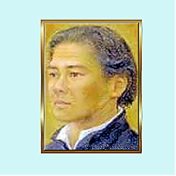

Isusovački blaženici
Svećenik · Misionar · Mučenik
Bl. Diego Yuki Ryosetsu
? – 1636.
Japanski isusovac plemićkoga podrijetla desetljećima je služio u tajnosti. Pri uhićenju nije otkrio svoje dobročinitelje i podnio je smrt uz vjeroučitelja Soana.
Tekst je preveden i prilagođen uz pomoć umjetne inteligencije.

Izvor slike
- Spomendan
- 25. veljače
- Zaštitništvo
- Nije navedeno u izvoru
- Životni vijek
- ? – 1636.
- Djelovanje
- Misije i evangelizacija · Obrazovanje i poučavanje vjere · Progoni i progonstvo · Mučeništvo
- Razdoblje
- 16., 17. stoljeće
- Podrijetlo
- Tokushima, Shikoku, Japan
- Ulazak u Družbu Isusovu
- 1597.
- Svećeničko ređenje
- 1615., Manila
- Datum smrti prema zaglavlju izvora
- 25. veljače 1636.
- Dob u trenutku smrti
- 61 godina
U kalendaru zbirke koristi se dan smrti. Taj datum nije zasebna potvrda liturgijskoga spomendana.
Životopis
Diego Yuki Ryosetsu potjecao je iz samurajske sredine u Tokushimi na Shikokuu i bio povezan s obitelji Ashikaga. Školovao se kod isusovaca, pristupio Družbi Isusovoj te početkom sedamnaestoga stoljeća studirao teologiju u Macau. Njegov se put prema ređenju odužio: kada se 1612. pripremao za svećeništvo u Japanu, biskup koji ga je trebao zarediti obolio je i umro.
Progon 1614. odveo ga je s Justom Takayamom Ukonom u progonstvo u Manilu. Ondje je 1615. primio svećenički red. Sljedeće se godine potajno vratio u Japan i dva desetljeća služio progonjenim kršćanima. Na ispitivanju je poslije tvrdio da je živio u planinama hraneći se onim što je pronalazio u prirodi. Time je zaštitio ljude koji su mu pružali sklonište, ne otkrivši njihova imena.
Japanska biskupska konferencija podrobnije opisuje širinu njegova poslanja. Već je 1607. služio crkvi u Fushimiju, a u Tokushimi poučavao i uglednike Hachisuku Iemasu te Ashikagu Yoshitanea. Nakon povratka iz Manile djelovao je iz Kyota i Osake. Odatle je obilazio središnje pokrajine, Shikoku i Edo; posjećivao je i prognane kršćane u Tsugaruu. Sačuvano je i njegovo pismo poglavaru Mascarenhasu, napisano u Kyotu 16. prosinca 1625.
U vrijeme velikoga kyotskog mučeništva 1619. s ocem Bentom Fernandesom i katehistom Michaelom Soanom tješio je vjernike i sudjelovao u pokapanju ubijenih. Kako su drugi misionari uhićivani, ostao je posljednji svećenik u središnjim pokrajinama. Soan ga nije napustio ni pri kraju života. Ryosetsu je 1636. u Osaki podnio mučeništvo vješanjem nad jamom, ostavši vjeran svojemu poslanju i ljudima kojima je služio. U Nagasakiju je 24. studenoga 2008. proglašen blaženim među 188 japanskih mučenika. Njegov život pripada povijesti domaćih japanskih svećenika koji su nastavili skrbiti za Crkvu nakon protjerivanja stranih misionara.
Tekst je preveden i prilagođen uz pomoć umjetne inteligencije.
Pročitaj više na izvornoj stranici ↗